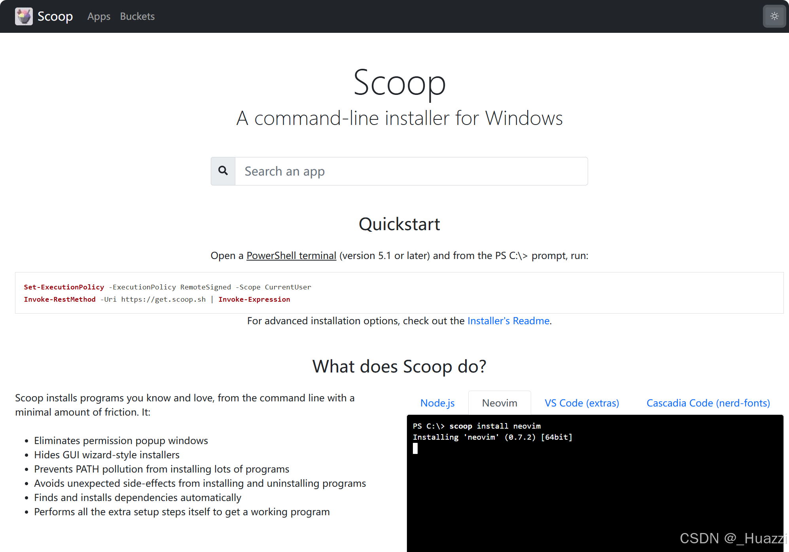

用 Scoop 优雅管理 Windows 软件
Scoop 是一款专为 Windows 设计的命令行软件包 管理工具，它能让你像 Linux 系统一样通过命令快速安装、更新和卸载软件。其核心优势包括：
无需管理员权限：默认安装在用户目录，避免权限问题。
绿色便携化：软件独立存放，不污染系统注册表。
依赖自动处理：自动配置环境变量和依赖项（如 Java、Python）。
海量软件仓库：支持主流开发工具、实用小软件甚至 GUI 应用。
————————————————

【保姆级】Scoop 国内稳定安装脚本 | 告别下载慢、安装坑
在 Windows 生态中，我们常常苦恼于软件安装的「碎片化」：官网找安装包、手动配置环境变量、卸载残留文件… 而 Scoop 正是为解决这些问题而生的「Windows 命令行包管理器」—— 像 Linux 的 apt、macOS 的 brew 一样，用一行命令搞定软件的安装、卸载、更新，彻底告别繁琐的手动操作。
本文不仅会详细介绍 Scoop 的核心价值，还提供了一套国内镜像优化的安装脚本（托管在 Gitee），解决官方源访问慢、安装失败等痛点，让国内用户能「一键无痛」用上 Scoop。
一、什么是 Scoop？核心价值是什么？
Scoop 是一款轻量级的 Windows 命令行包管理器，由开源社区维护，核心目标是「让 Windows 软件管理更简洁」。相比传统安装方式，它的优势体现在这些方面：
1. 无管理员权限也能装软件
Scoop 默认将软件安装到用户目录（如 D:\Scoop/C:\Users\你的用户名\scoop），无需管理员权限，避免 UAC 弹窗和系统目录污染，尤其适合办公电脑/受限环境。
2. 一行命令搞定「安装/卸载/更新」
- 安装：
scoop install git vscode nodejs（批量装多个软件） - 卸载：
scoop uninstall vscode（无残留，自动清理配置/环境变量） - 更新：
scoop update *（一键更新所有已装软件） - 搜索：
scoop search python（快速查找可用软件版本）
3. 纯净无捆绑，远离流氓软件
Scoop 收录的软件均为官方原版，无广告、无捆绑、无修改，彻底告别第三方下载站的「全家桶」陷阱。
4. 灵活的版本管理
通过 scoop versions 仓库，可轻松安装软件的历史版本（比如 scoop install nodejs@16.18.0），解决「新版本兼容问题」「旧版本刚需」等场景。
5. 自定义软件源（Bucket）
Scoop 支持通过「Bucket（软件仓库）」扩展软件库，除了官方 main 仓库（基础工具），还有 extras（桌面软件）、dorado（中文软件）等，覆盖几乎所有常用工具。
二、国内使用 Scoop 的痛点？
官方 Scoop 依赖 GitHub 源，国内用户直接安装会遇到：
- 安装脚本下载超时、失败；
- 软件包下载速度极慢（几KB/s）；
- Bucket 仓库同步延迟，找不到部分软件；
- 手动配置镜像/代理繁琐，新手易踩坑。
为此，我基于国内镜像源封装了一套一键安装脚本，解决以上所有问题。
三、脚本核心优势（Gitee 托管，国内直达）
本脚本针对国内环境做了深度优化，核心特性：
国内镜像源优先：
- Scoop 主仓库替换为 Gitee 镜像（
https://gitee.com/scoop-installer/scoop）； - Bucket 仓库替换为南京大学镜像（
mirror.nju.edu.cn），速度拉满； - 安装脚本优先拉取 Gitee 镜像，失败自动回退官方源。
- Scoop 主仓库替换为 Gitee 镜像（
路径自定义+容错：
默认安装到D:\Scoop（避免 C 盘臃肿），若 D 盘不可写自动回退到用户目录，无需手动改配置。自动配置下载加速：
自动安装aria2并开启多线程下载（5线程+断点续传），下载速度提升数倍；
配置南大 GitHub 代理，解决 GitHub 资源拉取慢的问题。中文提示+可重复执行：
全程中文指引，新手也能看懂；脚本支持重复运行（已安装则跳过，未配置则补充），不怕中途出错。预装常用 Bucket：
自动配置main/extras/versions（官方核心仓库）+dorado/scoopcn（中文软件仓库），开箱即用。
四、使用方法（三步搞定）
前置条件
- Windows 10/11 系统；
- 打开「普通用户权限」的 PowerShell（不要用管理员身份！脚本会检测并提示）；
- 确保网络可访问外网（无需科学上网，镜像源已适配国内）。
执行步骤
- 打开 PowerShell（按下
Win+R，输入powershell，回车）； - 执行以下命令（直接复制粘贴），拉取并运行脚本：
1 | # 临时允许执行脚本（仅当前会话有效） |
- 等待脚本自动执行（全程无需手动干预），执行完成后重新打开 PowerShell 即可使用 Scoop。
注意事项
- 若提示「无法连接镜像」，检查网络后重新运行即可；
- 脚本执行完成后，建议重启 PowerShell 让环境变量生效；
- 如需卸载 Scoop，执行
scoop uninstall scoop即可彻底清理。
五、Scoop 常用命令（新手速查）
1 | # 查看版本 |
六、总结
Scoop 是 Windows 效率提升的「神器」—— 用命令行替代繁琐的图形化操作，让软件管理更高效、更纯净。而本脚本则解决了国内用户的「安装门槛」，通过镜像源、自动配置、中文提示，让新手也能快速上手。
脚本已托管至 Gitee 仓库：https://gitee.com/auspicious-snow1224/Scoop_install_project
欢迎 Star/Fork，也欢迎提 Issue 反馈问题。如果觉得有用，不妨分享给身边的开发者/Windows 用户～
附：脚本开源说明
本脚本基于 Scoop 官方安装逻辑修改，核心优化点：
- 替换所有境外源为国内镜像；
- 增加路径容错、环境变量预配置；
- 自动配置 aria2 加速和代理；
- 全程中文交互，降低使用门槛。
脚本遵循 MIT 协议开源，可自由修改、分发。